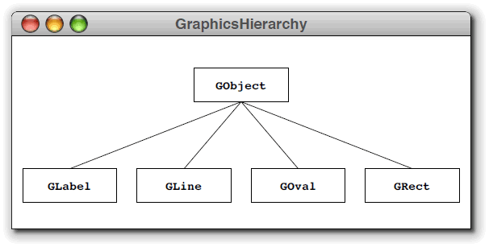

In Chapter 8 you learned how
to create GUI programs, using the classes in the
ACM class libraries. For this assignment, you'll create
a GraphicsProgram that uses the
GRect, GLine and
GLabel classes to display a portion of
the ACM GUI class hierarchy.
Before you start this assignment, make sure you have read Section 8.1—ACM Graphics Programs and Section 8.2—Meet the GObject.
ACM Graphical Shapes—GraphicsHierarchy
Write an ACM GraphicsProgram, named
GraphicsHierarchy that draws the partial
diagram of the acm.graphics class hierarchy as
shown here:

The red, yellow and blue dots, and the title of the window are not part of the assignment. This is just what the program looks like when it runs on the Mac. Yours will look slightly different.
The only classes you need to create this picture are
GRect, GLabel, and GLine.
The tricky part is specifying the coordinates so that the
different elements of the picture are aligned properly. The
aspects of the alignment for which you are responsible are:
- The width and height of the class boxes should be specified as named constants so that they are easy to change. Make each box 46 pixels high and 120 pixels wide.
- The labels should be centered in their boxes. You can find
the width of a label by calling
label.getWidth()and the height it extends above the baseline by callinglabel.getAscent(). If you want to center a label, you need to shift its origin by half of these distances in each direction. - The connecting lines should start and end at the center of the appropriate edge of the box.
- The entire figure should be centered in the window.
Here's a hint. Instead of doing everything inside the
init() or run() method, create your
own user-defined methods to do common tasks, like centering
a label in a box.
Define the public static final int values
APPLICATION_WIDTH and
APPLICATION_HEIGHT to specify the width and
height of the application when it runs. The size should be
600 by 300. Define these outside of the init()
or run()
method.
Run the Check program to test your work.
Here is a video that will give you step-by-step instructions
building the app: